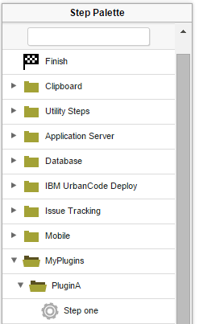

The plugin.xml file for automation plug-ins
An automation plug-in is defined with the plugin.xml file.
The structure of this file consists of a header element and one or more step-type elements. The header element identifies the plug-in. Each step-type element defines a step. Steps are available to users in the process editor and are used to construct component processes.
After the document type declaration, the plugin root element identifies the XML schema type, PluginXMLSchema_v1.xsd, which all plug-ins use. The following code sample presents the basic structure of the plugin.xml file for automation plug-ins:
<?xml version="1.0" encoding="UTF-8"?>
<plugin xmlns="http://www.urbancode.com/PluginXMLSchema_v1"
xmlns:xsi="http://www.w3.org/2001/XMLSchema-instance">
<header>
<identifier id="plugin_id" version="version_number" name="Plug-in Name"/>
<description/>
<tag>Plugin type/Plugin subtype/Plugin name</tag>
</header>
<step-type name="Step_Name">
<description/>
<properties>
<property name="property_name" required="true">
<property-ui type="textBox" label="Driver Jar"
description="The full path to the jdbc driver jar to use."
default-value="${p:resource/sqlJdbc/jdbcJar}"/>
</property>
</properties>
<post-processing>
<![CDATA[
if (properties.get("exitCode") != 0) {
properties.put("Status", "Failure");
}
else {
properties.put("Status", "Success");
}
]]>
</post-processing>
<command program="${path_to_tool">
<arg value="parameters_passed_to_tool"/>
<arg path="${p:jdbcJar}"/>
<arg file="command_to_run"/>
<arg file="${PLUGIN_INPUT_PROPS}"/>
<arg file="${PLUGIN_OUTPUT_PROPS}"/>
</command>
</step-type>
</plugin>
The <tag> tag specifies the location of the steps in the process editor palette. For example, the following code specifies that the steps are in the MyPlugins/PluginA folder.
<tag>MyPlugins/PluginA</tag>
When the plug-in is installed, the steps appear in the specified folder in the palette, as shown in the following figure.

In HCL® UrbanCode™ Deploy version 6.1 and later, you can further organize specific steps into sub-folders. For example, assume that the plugin.xml file puts steps in the MyPlugins/PluginA folder, as in the previous example. The following code puts a step in the MyPlugins/PluginA/Subgroup1 sub-folder:
<step-type name="Step one">
<server:sub-tag>Subgroup1</server:sub-tag>
To organize steps into sub-folders in this way, you must add the namespace xmlns:server="http://www.urbancode.com/PluginServerXMLSchema_v1" to the <plugin> tag that is at the root of the plugin.xml file, as in the following example:
<plugin xmlns="http://www.urbancode.com/PluginXMLSchema_v1"
xmlns:server="http://www.urbancode.com/PluginServerXMLSchema_v1"
xmlns:xsi="http://www.w3.org/2001/XMLSchema-instance">
Restriction: Plug-ins that use sub-folders in this way work only in HCL UrbanCode Deploy version 6.1.0 and later.
For information about the structure of plugin.xml for source plug-ins, see Creating source plug-ins.
- The header element
The mandatoryheaderelement identifies the plug-in and contains three mandatory child elements and one optional child element: - The plugin-javaopts.conf file
The plugin-javaopts.conf file can be used to set the JAVA_OPTS environment variable for automation plug-ins that use Groovy.
Parent topic: Creating plug-ins